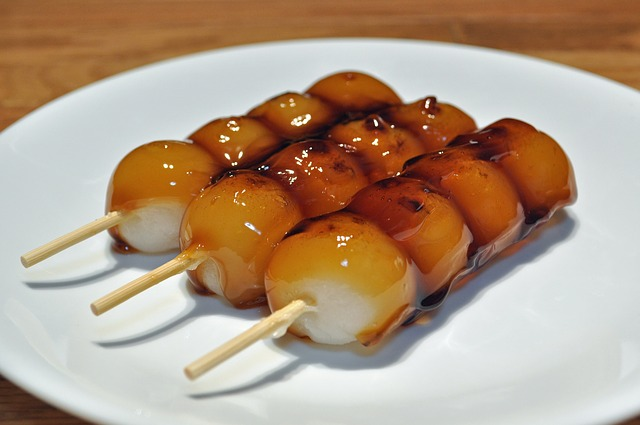
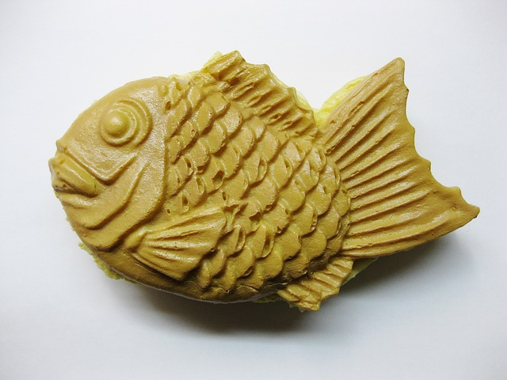
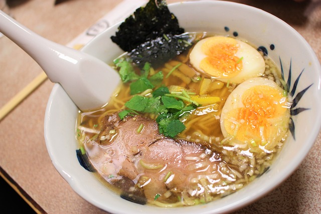
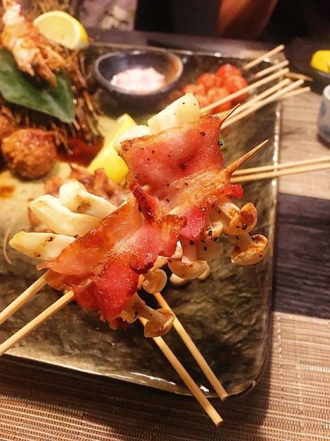
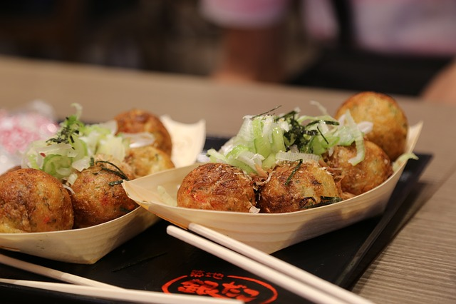
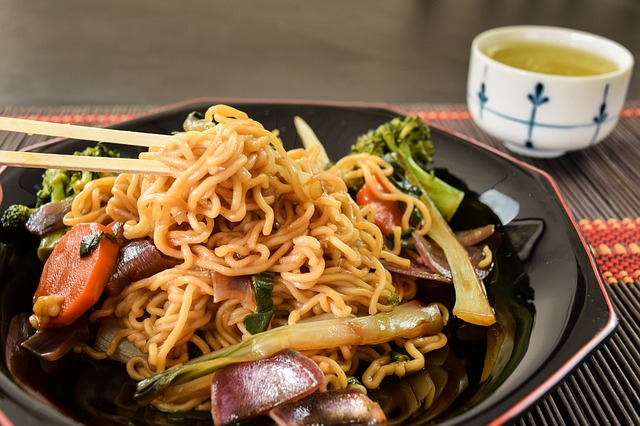
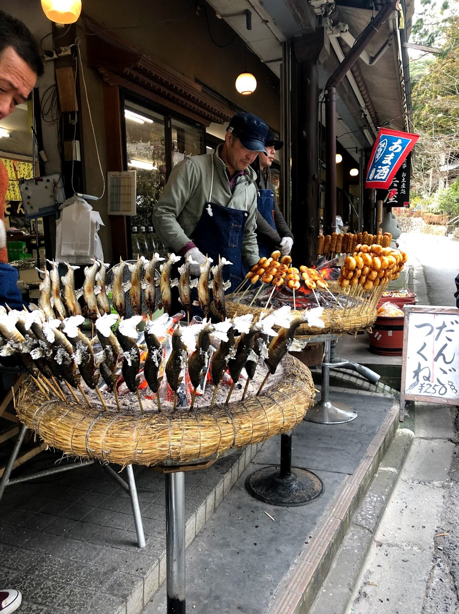
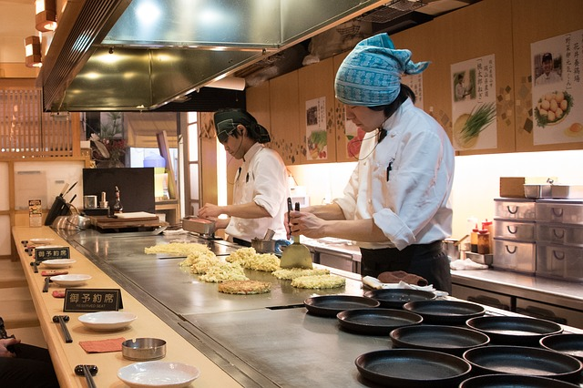
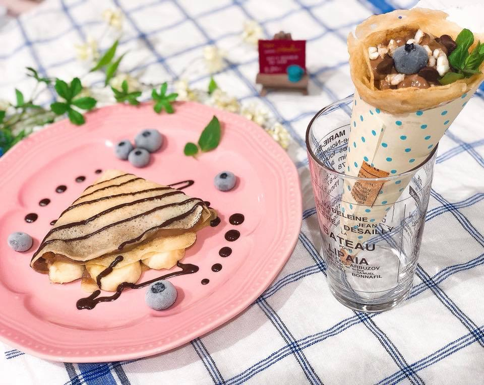

Dango

Dango is one of the oldes traditional Japanese Mochi sweets made of glutinous rice/sweet rice flour.
Small round Mochi balls are skewered on bamboo sticks and covered with a gooey sweet and salty brown sauce.
Traditionally, eat with hot green tea.
Taiyaki

It's a warm fish-shape cake with sweet red bean filling. Its fish-shape expresses sea bream, and in Japanese called "Tai".
The outer layer pancakes are usually thin and crispy between pancakes and waffles, and they nicely match with the sweet bean filling inside.
Other poplular fillings may be custard, chocolate, cheese, or sweet potato.
Ramen

It was originally imported from China and has become one of the most popular dishes.
Ramen noodle is made from wheat flour, water, and salt.
That mixture is kneaded together into a dough, then rolled (or hand-pulled), cut, and steamed.
But there's a crucial ingredient that makes ramen different from any other type of noodle: KANSUI, a type of alkaline water that gives ramen noodles their signature springy texture.
Yakitori

grilled chicken skewers made from bite sized pieces of meat from all different parts of the chicken and cooked over charcoal.
Takoyaki

Literally "grilled octopus" in Japanese, is a savory snack hailing from Osaka.
It’s made with flour shaped like a ball and filled with succulent minced octopus.
Yakisoba

Yakisoba is a classic stir fry noodles dish with pork and vegetables, and it’s seasoned with a sweet & savory sauce similar to Worcestershire sauce.
Ayu no Shioyaki

Grilled and salted sweetfish is slow-cooked over a glowing charcoal barbecue.
The name "sweetfish" was inspired by the sweetness of its flesh.
It's a relative of the smelts and native to East Asia.
Okonomiyaki

Okonomi means "as you like it", Yaki means "grilled". It is a savory panfried food that consists of batter and cabbage with variety of your choice.
The most popular ones are with cheese, pork, mochi, corns.
Crepe

Unlike French style, Japanes creps are filled with whipped cream, cut fruits, icecream and sweet sauce folded into a cone and wrapped with paper.
Harajuku in Tokyo is known for crepe town as well.